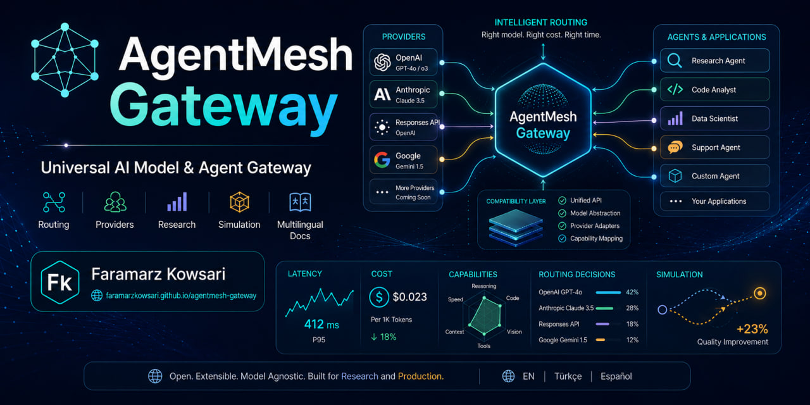

Tek ağ geçidi. Birden çok AI protokolü ve sağlayıcısı.
AgentMesh Gateway, AI istemcilerine ve kodlama ajanlarına kararlı bir giriş noktası sunar. Herhangi bir yönlendirme politikası maliyet, gecikme, kalite veya sıraya göre optimizasyon yapmadan önce hangi sağlayıcıların gerçekten uygun olduğunu belirler.
AgentMesh'i farklı yapan nedir?
Sistem tüm sağlayıcıları tek listede puanlamak yerine önce isteğin model, protokol, yetenek, devre durumu ve yerel kota kurallarını ihlal edecek seçenekleri eler.
Önce uygunluk
Sert kapılarUyumsuz bir sağlayıcı sırf daha ucuz veya hızlı olduğu için seçilemez.
Kanıta dayalı çalışma zamanı
Maliyet + gecikmeToken kullanımı, gözlenen maliyet, EWMA gecikmesi ve p50/p95 örnekleri eksik veriyi uydurmadan izlenir.
Canlı maliyet olmadan araştırma
AğsızStatik ve uyarlanabilir politikalar gerçek sağlayıcılara bağlanmadan deterministik izler üzerinde karşılaştırılabilir.
Bir isteğin yolculuğu
Mimari; protokol dönüşümü, uygunluk, politika puanlaması, sağlayıcı çağrısı ve araştırma ölçümlerini ayrı katmanlarda tutar.
İstemci isteği
Chat, Responses veya Anthropic biçimli trafik gelir.
Normalize et
Mesajlar, araçlar ve yanıt semantiği mümkün olduğunda ortak modele taşınır.
Filtrele
Model, devre, kayıpsız protokol, yetenek ve kota kapıları geçersiz seçenekleri çıkarır.
Sırala
Üretim politikası yalnızca uygun sağlayıcıları sıralar.
Çalıştır
Adapter upstream çağrısını, hataları, retry ve failover sınırlarını yönetir.
Ölç
Çalışma zamanı kanıtı tanılama ve çevrimdışı simülasyon için saklanır.
adaptive_balanced ve constrained_ucb politikaları yalnızca çevrimdışı simülasyonda kullanılır.Yazar hakkında
Biyografi ve resmî bağlantılar.

Faramarz Kowsari
Faramarz Kowsari, İstanbul merkezli bir yazar ve araştırmacıdır. Teknoloji, eğitim ve kişisel gelişimin kesişimine odaklanan Kowsari, uluslararası platformlarda 80'den fazla dijital eser yayımlamıştır. Uzmanlık alanları Yapay Zekâ, prompt mühendisliği, modern işlem stratejileri (Smart Money Concepts ve algoritmik trading), klasik edebiyat ve mindfulness konularını kapsar. Yazarlığın yanı sıra web tabanlı eğitim araçları geliştirir ve uzmanlaşmış öğretici video içerikleri üretir.
Resmî Profiller ve Kaynaklar
Araştırma ve arşiv kaydı
Sürümlenmiş yazılım, tekrar üretilebilirlik belgeleri ve kalıcı atıf bilgileri.
Sürüm
0.3.0Python 3.11+; CI Python 3.11, 3.12 ve 3.13 üzerinde çalışır.
Zenodo
DOILisans
Apache-2.0Açık geliştirme, açık provenance ve katkı kuralları.